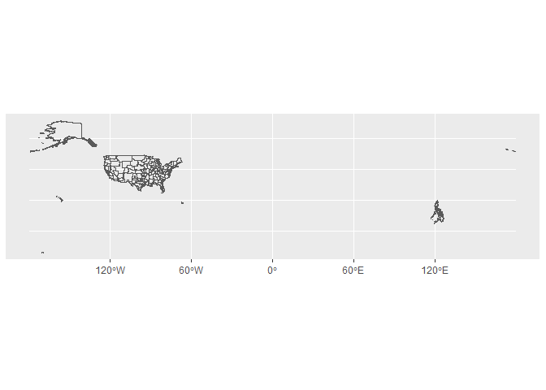
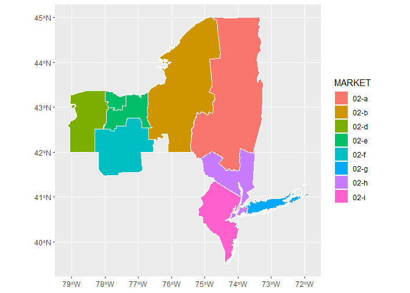
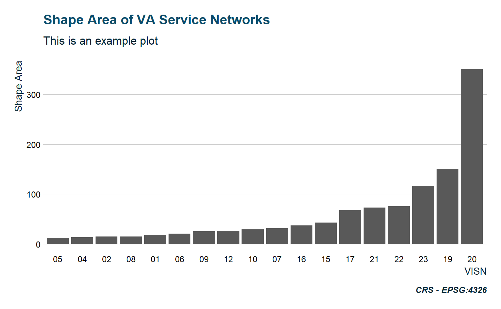

The goal of tidyVA is to provide simple features of Veterans Health Administration geographies. Data included are tidy data frames of VHA spatial data obtained from data.va.gov.
The benefit of simple features in R is that they allow for tidy spatial analysis.
Datasets
VHA Geographies
The following included datasets are sf tibbles of VHA geographies and have a common CRS - EPSG: 4326.
Summarized descriptions from data.va.gov
county: The county layer is the base geographic unit of the VISN-Market-Submarket-Sector-County hierarchy.
sector: A sector is a cluster of geographically adjacent counties within a VA Submarket.
submarket: Submarkets reflect a clustering of the enrolled population within a market and are an aggregation of Sectors.
market: Each market is built from submarkets and represent an aggregated geographic area having sufficient population and geographic size to benefit from planning healthcare services. Markets cross state borders where necessary to keep the catchment area within the same market
visn: VISNs are the upper echelon in the VHA hierarchy. VISN boundaries align with those of their constituent markets and can span across non-contiguous areas.
Other Data
states: Simple features of states and territories of the US (CRS - EPSG: 4326). Used for spatial joins and geometric manipulations.
VAloc: Simple features (CRS - EPSG: 4326) of all VA facilities - from all Administrations: Veterans Health Administration, Veterans Benefits Administration, and National Cemetery Administration
Example
This is a basic example which shows you how to solve a common problem:
VHA Submarkets are an aggregation of Sectors; and Sectors are comprised of one or more counties. Since each VISN is defined in a hierarchy, this dataset contains attributes of all echelons above submarket - that is, Market and VISN.

Although accurate, this output is not very easy to work with. But, since this is in tidy format, we can easily filter and manipulate the data.
glimpse(submarket)
#> Observations: 153
#> Variables: 6
#> $ VISN <chr> "01", "01", "01", "01", "02", "02", "02", "02", "02...
#> $ MARKET <chr> "01-a", "01-b", "01-c", "01-d", "02-a", "02-b", "02...
#> $ SUBMARKET <chr> "01-a-9", "01-b-9", "01-c-9", "01-d-9", "02-a-9", "...
#> $ Shape_Leng <dbl> 38.391428, 81.160361, 13.413957, 14.839457, 13.0815...
#> $ Shape_Area <dbl> 1.78751288, 9.66806953, 5.47709016, 2.19550641, 4.9...
#> $ geometry <MULTIPOLYGON [°]> MULTIPOLYGON (((-71.56974 4..., MULTI...#> Simple feature collection with 10 features and 5 fields
#> geometry type: MULTIPOLYGON
#> dimension: XY
#> bbox: xmin: -79.13745 ymin: 39.50577 xmax: -71.85615 ymax: 45.01585
#> epsg (SRID): 4326
#> proj4string: +proj=longlat +datum=WGS84 +no_defs
#> # A tibble: 10 x 6
#> VISN MARKET SUBMARKET Shape_Leng Shape_Area geometry
#> <chr> <chr> <chr> <dbl> <dbl> <MULTIPOLYGON [°]>
#> 1 02 02-a 02-a-9 13.1 4.91 (((-73.34312 45.01084, -73~
#> 2 02 02-b 02-b-9 18.8 4.01 (((-76.18704 43.66566, -76~
#> 3 02 02-d 02-d-9 6.58 1.25 (((-78.90518 42.93351, -78~
#> 4 02 02-e 02-e-1 2.49 0.191 (((-77.97621 43.36874, -77~
#> 5 02 02-e 02-e-2 6.01 0.656 (((-76.94668 43.25894, -76~
#> 6 02 02-f 02-f-2 6.14 1.63 (((-76.94756 42.76441, -76~
#> 7 02 02-g 02-g-9 25.2 0.335 (((-73.72961 40.59637, -73~
#> 8 02 02-h 02-h-1 9.51 0.999 (((-73.89687 40.79565, -73~
#> 9 02 02-h 02-h-3 5.92 0.0717 (((-74.20241 40.57956, -74~
#> 10 02 02-i 02-i-9 17.4 1.24 (((-74.30019 39.50628, -74~ggplot() +
geom_sf(data = visn2, aes(fill = MARKET), color = NA) +
geom_sf(data = visn2, fill = NA, color = "#ffffff", size = .25)

Functions
shift_geo
shift_geo() will project and re-position Alaska and Hawaii, When supplied a complete dataset (from VHA Geographies).

theme_va()
theme_va() is a ggplot theme with some default colors and plotting parameters. The core of this function is theme_ipsum from hrbrthemes, with some modifications and defaults.
data("visn")
visn %>%
ggplot(aes(reorder(VISN,Shape_Area), Shape_Area)) +
geom_col() +
labs(x = "VISN", y = "Shape Area",
caption = "CRS - EPSG:4326") +
ggtitle("Shape Area of VA Service Networks",
subtitle = "This is an example plot") +
theme_va(grid = "Y")
sail_tidy
sail_tidy will return a tibble of VA SAIL metrics when provided a data table url.
sail_tidy("https://www.va.gov/QUALITYOFCARE/SAIL_FY19_Q1/SAIL-5_clarksburg_fy19q1.xlsx")
#> # A tibble: 63 x 8
#> label measure_unit preferred_direc~ best_10_percent ntiles_10_50_90
#> <chr> <chr> <chr> <chr> <chr>
#> 1 Acut~ O/E <U+2193> 0.469 0.469 - 0.857 ~
#> 2 Acut~ O/E <U+2193> 0.740 0.740 - 0.952 ~
#> 3 AMI ~ % <U+2193> 7.219 7.219 - 7.666 ~
#> 4 CHF ~ % <U+2193> 5.676 5.676 - 6.820 ~
#> 5 Pneu~ % <U+2193> 7.820 7.820 - 9.026 ~
#> 6 COPD~ % <U+2193> 4.402 4.402 - 5.942 ~
#> 7 Stro~ % <U+2193> 5.134 5.134 - 5.933 ~
#> 8 In-h~ O/E <U+2193> 0.000 0.000 - 0.834 ~
#> 9 Cath~ inf/1k devi~ <U+2193> 0.000 0.000 - 0.446 ~
#> 10 Cent~ inf/1k devi~ <U+2193> 0.000 0.000 - 0.395 ~
#> # ... with 53 more rows, and 3 more variables: site <chr>, value <chr>,
#> # measure <chr>